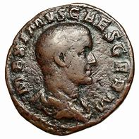

Historical Significance
The year 235 AD was notable in ancient history, marking the start of the Crisis of the Third Century in the Roman Empire. This period saw increased turmoil, with military conflicts and economic instability reshaping the empire.
Cultural Symbolism
In numerology, the number 235 is often broken down to its individual digits (2, 3, and 5) to interpret its energy and symbolism. The number 2 is often associated with balance and partnership, 3 with creativity, and 5 with change. Together, they are seen as a dynamic blend of growth, creativity, and transformation.